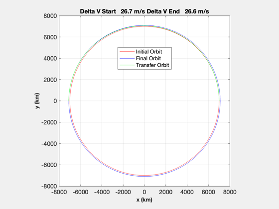
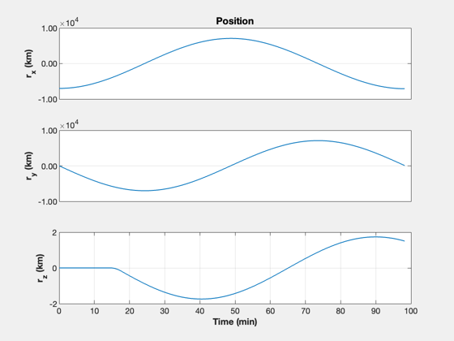
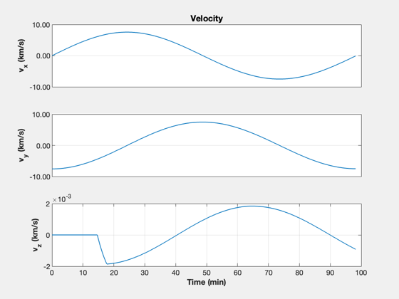
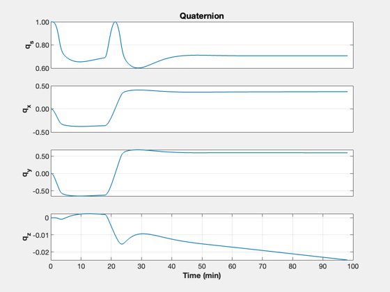
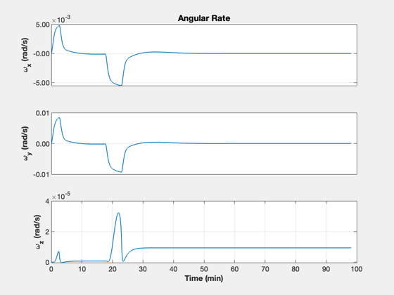
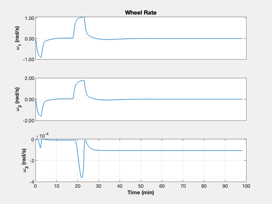
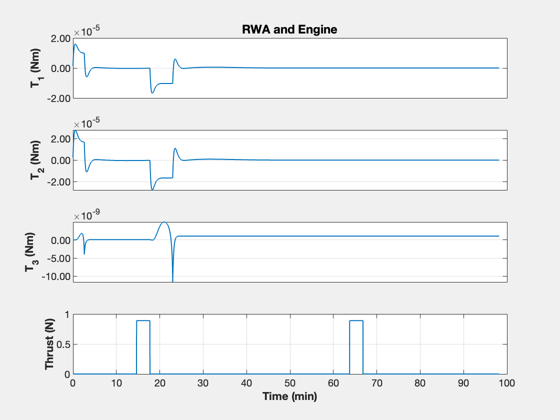
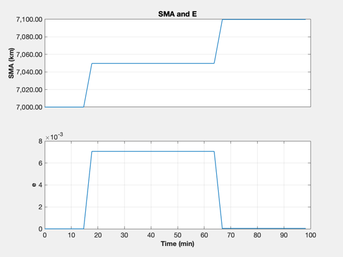
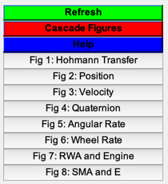

Demonstrate a Hohmann Transfer in simulation
The spacecraft has 3 reaction wheels and a single thruster that needs to be aligned with the velocity vector for the burns. The delta-V is computed with OrbMnvrHohmann, and the propellant mass is then computed using RocketMass. The fuel mass is then used to compute the duration of the finite burn. A numerical simulation implements the necessary attitude and orbit
------------------------------------------------------------------------- See also: Mag, RV2El, Period, OrbMnvrHohmann, RocketMass, InertiaCubeSat, RHSRWAOrbit, PID3Axis, RK4, TimeHistory, Figui -------------------------------------------------------------------------
Contents
%------------------------------------------------------------------------------- % Copyright (c) 2022 Princeton Satellite Systems, Inc. % All rights reserved. % Since version 2022.1 %-------------------------------------------------------------------------------
Constants
nToKN = 0.001;
mu = Constant('mu earth');
Compute the maneuver - dVs 'a' and 'b'
rI = [-7000;0;0]; vI = [0;-sqrt(mu/Mag(rI));0]; rF = 7100; el = RV2El(rI,vI); p = Period(el(1)); OrbMnvrHohmann(Mag(rI),rF); [dV,tOF] = OrbMnvrHohmann(Mag(rI),rF);
Hohmann Transfer ------------------------------------------------ Initial Orbit Radius = 7000.0000 Final Orbit Radius = 7100.0000 ------------------------------------------------ Delta V Total = 0.0533 Delta V at A = 0.0267 Delta V at B = 0.0266 E transfer = 0.0071 SMA transfer = 7050.0000 Time of Flight = 0.8182 hours
Set up the spacecraft engine and burn data
mP = 6; % kg thrustE = 4.448*0.2; % N dVTot = dV.a + dV.b; % km/s iSp = 224; % s fS = 0.1; % Structural fraction [mF,mT] = RocketMass(iSp,mP,fS,dVTot); inr = InertiaCubeSat('6U',mT); acc = thrustE/mT; % m/s^2 tBA = dV.a/acc/nToKN; % burn time A, s tBB = dV.b/acc/nToKN; % burn time B, s t1 = p/6; % maneuver A time t2 = t1 + tOF; % maneuver B time tStart = [t1-tBA/2 t2-tBB/2]; % center burn durations on target time tEnd = tStart + [tBA tBB]; [~, vA] = RVFromKepler( el, t1 ); [~, vB] = RVFromKepler( el, t1+0.5*p ); uA = Unit(vA); uB = Unit(vB);
Specify dynamics
dRHS = RHSRWAOrbit; dRHS.inr = inr; dRHS.m = mT;
Set up the controller
dC = PID3Axis; dC.body_vector = [0;0;1]; dC.mode = 1; % Align two axes dC.inertia = inr; fprintf('Burn A duration %8.2f s\n',tBA); fprintf('Burn B duration %8.2f s\n',tBB); fprintf('Thrust %8.2f N\n',thrustE); fprintf('Mass Total %8.2f kg\n',mT); fprintf('Mass Fuel %8.2f kg\n',mF); fprintf('Initial SMA %8.2f km\n',el(1)); fprintf('Initial e %8.2f\n',el(5));
Burn A duration 185.04 s Burn B duration 184.39 s Thrust 0.89 N Mass Total 6.16 kg Mass Fuel 0.15 kg Initial SMA 7000.00 km Initial e 0.00
Steps
1. Reorient with reaction wheels, 2. Burn, 3. Reorient/coast, 4. Burn
Simulation
% ECI burn vector uBurn = [uA uB]; dT = 1; % s n = ceil(2*tOF/dT); kMnvr = 1; % State: [r;v;q;w x = [rI;vI;1;zeros(9,1)]; xP = zeros(22,n); inMnvr = false; t = (0:n-1)*dT; aDone = false; bDone = false; % Simulation loop for k = 1:n % Update the controller dC.eci_vector = uBurn(:,kMnvr); [tRWA, dC] = PID3Axis( x(7:10), dC ); inMnvr = false; % Perform the first burn if( t(k) > tStart(1) && t(k) < tEnd(1) ) inMnvr = true; end % Switch orientation if( t(k) > tEnd(1) ) kMnvr = 2; end % Perform the second burn if( t(k) > tStart(2) && t(k) < tEnd(2) ) inMnvr = true; kMnvr = 2; end if( inMnvr ) dRHS.force = thrustE*QTForm(x(7:10),dC.body_vector)*nToKN; % kN else dRHS.force = [0;0;0]; end [sma,ecc] = RV2AE(x(1:3),x(4:6)); xP(:,k) = [x;tRWA;Mag(dRHS.force)/nToKN;sma;ecc]; % Right hand side dRHS.torqueRWA = -tRWA; x = RK4(@RHSRWAOrbit,x,dT,0,dRHS); end fprintf('Final SMA %8.2f km\n',sma); fprintf(' SMA error %8.2f km\n',rF-sma); fprintf('Final e %8.2g\n',ecc); yL = {'r_x (km)' 'r_y (km)' 'r_z (km)' ... 'v_x (km/s)' 'v_y (km/s)' 'v_z (km/s)' ... 'q_s' 'q_x' 'q_y' 'q_z' ... '\omega_x (rad/s)' '\omega_y (rad/s)' '\omega_z (rad/s)' ... '\omega_1 (rad/s)' '\omega_2 (rad/s)' '\omega_3 (rad/s)' ... 'T_1 (Nm)' 'T_2 (Nm)' 'T_3 (Nm)' ... 'Thrust (N)' 'SMA (km)' 'e'}; k = 1:3; TimeHistory(t,xP(k,:),yL(k),'Position'); k = 4:6; TimeHistory(t,xP(k,:),yL(k),'Velocity'); k = 7:10; TimeHistory(t,xP(k,:),yL(k),'Quaternion'); k = 11:13; TimeHistory(t,xP(k,:),yL(k),'Angular Rate'); k = 14:16; TimeHistory(t,xP(k,:),yL(k),'Wheel Rate'); k = 17:20; TimeHistory(t,xP(k,:),yL(k),'RWA and Engine'); k = 21:22; TimeHistory(t,xP(k,:),yL(k),'SMA and E'); Figui; %-------------------------------------- % $Id: a6b04be8a39621313bc0c75c9b5fd321e6438fdf $
Final SMA 7099.86 km SMA error 0.14 km Final e 4.4e-05       